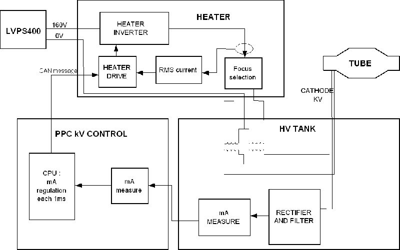

Operating Documentation
Direction 5224328-800, Rev# 5
Dir 5224328-800 LightSpeed 5.X HP60 Limited Access Service
Methods - Adv.
Operating Documentation |
Illustration 1: JEDI Generator / mA Function

| NOTE: | For a larger version of the above illustration, click on the pdf icon below: |
Media File 1: JEDI Generator / mA Function

The mA function is mainly controlled by the PPC kV control board CPU function.
After power on, the CPU sends a preheat command to the heater function ( except for applications where preheat is not used ).
Then the CPU receives the kV, mA and exposure time commands.
When the CPU receives the exposure enable signal ( either by a communication message or by a real time hardware line both linked to the prep button ), it calculates the acquisition filament drive to apply to the filament in order to match the required tube mA.
This calculation is based on:
the filament drive values stored in the tube database
the interpolation to calculate the filament drive for the (kV, mA) point selected
the filament aging correction
Then it either:
calculates the filament boost command to apply to the filament to fasten the filament temperature rise and send it to the heater function. In this case, the boost duration is 400ms and is followed by the acquisition command send to the heater function.
or does not use any boost command and directly sends the acquisition command to the heater function
When exposure command goes in its active state, the CPU:
starts the exposure
measures the mA each 1ms ( start 5ms after exposure start), compares it to the mA demand and calculates the filament drive to apply to reach the mA demand
sends each 1ms, the new filament drive to the heater function
updates mA demand if required by the system or by generator algorithm ( ABC mode, falling load mode, variable mA mode )
checks mA accuracy
The heater function:
gets the filament drive demand each 1ms
measures the heater inverter RMS current two times per 1ms, compares it to the filament drive demand and applies the inverter frequency to reach the right filament drive current
checks inverter RMS current to avoid exceeding the max filament temperature
sends each 100ms the inverter RMS current measure to the kV control CPU
When the exposure command goes in its inactive state, the CPU either stay with the last filament drive demand or goes in preheat mode or stops filament drive to allow a fast filament cooling before going preheat. The rule depends on the application.